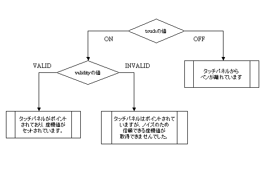

#include <nitro/spi.h>typedef struct {
u16 x;
u16 y;
u16 touch;
u16 validity;
} TPData;| x | x-coordinate |
| y | y-coordinate |
| touch | Touch determination flag |
| validity | Coordinate value validity flag Even when INVALID, touch value is valid |
This structure expresses touch panel coordinates. You can use this structure for raw touch panel values as well as for screen coordinate values.
touch acquires the following values, and shows whether the touch panel is currently being touched.
TP_TOUCH_OFF 0 // Touch panel is not being touched TP_TOUCH_ON 1 // Touch panel is being touched
validity acquires the following values and shows the validity of the results that were obtained from the chattering measure process. Even when this flag is INVALID, touch value is valid. Therefore, you should still perform ON/OFF assessment.
TP_VALIDITY_VALID 0 // Valid data TP_VALIDITY_INVALID_X 1 // X coordinate data is invalid TP_VALIDITY_INVALID_Y 2 // Y coordinate data is invalid TP_VALIDITY_INVALID_XY (TP_VALIDITY_INVALID_X | TP_VALIDITY_INVALID_Y) // X, Y coordinate data are both invalid
When creating an application, the case where the INVALID value is stored should be taken into consideration. To avoid abnormal operation even when an INVALID value was obtained, it is recommended that you take precautions against such a situation by using the coordinate data obtained last as VALID value.

04/16/2004 Initial version
CONFIDENTIAL